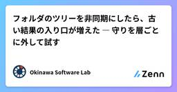
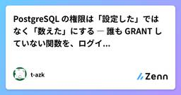
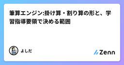
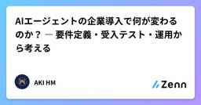

Zennの「Test」のフィード
フィード
遅いテストを速くする
Zennの「Test」のフィード
この記事は JJUG CCC 2026 Fall 「遅いテストを速くする」の登壇資料です. AIによって生成した音声概要. 不正確な情報や音声の乱れが含まれる場合があります. Agentic coding の普及によって開発者テストのあり方が変わってきています. 開発者テストはAIエージェントが書いたコードを保証するためにますます重要になり, なおかつ手間のかかるテストの作成をAIエージェントに任せられるようにもなりました. これまで以上に自動テストが肥大化しているだけでなく「全てE2Eテストでよい」といった主張まで見られるようになってきています. こうした変化によって新たな課題がうまれ...
10時間前

AIが「直りました」と言った。その修正、採っていい？
Zennの「Test」のフィード
AIにエラーを渡し、修正を頼む。しばらくすると、差分と一緒に「直りました。テストも通っています」と返ってくる。 実行すると、確かに動く。でも、変更されたコードを全部説明できるほど詳しくはない。このまま採ってよいのか、もう一度AIに聞くべきなのか。そこで手が止まる人へ向けた記事です。 まず、「何ができれば採るか」を書き、その条件を実際に確認した結果があるかを見るところから始めます。今回なら「合計が105になる」に加えて、「指定した呼び方を守る」ことまで必要です。同じ105を返す二つの修正でも、この条件を置くと採否が分かれます。 この記事では、Pythonの小さな関数でその違いを自分で確かめ...
11時間前

AIの自動記録を直した後、失敗したときに何を書かないかを確かめる
Zennの「Test」のフィード
今回見直したいのは、修復後に成功したかに加えて、失敗したときに何を書かずに止めるかだ。 ダッシュボード開発の作業結果を、AIが取得してGoogle Sheetsへ記録する。その処理を確かめるとき、正常に取得できた例だけを見ていると、入力が欠けた場面の扱いが残る。 構築時の検証記録には、存在しないページの取得で書き込みを行わない試験と、同じ入力を再処理しても既存の記録キーを維持する試験が残っている。 外部ページを取得できなかった場合、返ってくる情報は、正常に取得できた空の一覧とは意味が違う。 記事の取得を例にすると、ページが見つからないこと、通信に失敗したこと、公開された記事が見つからない...
1日前

E2Eが通っても安心できない。利用者役のAIが開発環境を一周するAgentic UAT
Zennの「Test」のフィード
こんにちは、MJです。株式会社ビズリーチの AI Product Studio（以下、APS）で、AIを前提にした開発プロセスづくりに取り組んでいます。 AIが利用者と対話しながら進めるサービスでは、変更を加えるたびに、画面が動くだけでなく、利用者の返答に応じて会話が進み、目的を果たせるかまで確かめる必要があります。 ただ、AIとの対話は、同じ目的でも質問や返答、その後の展開に幅があります。人が利用者役になり、状況や答え方を変えて何度も会話するには手間がかかります。AIを使う開発では変更も速くなるため、そのたびに人が会話を一通り試す方法では、検証が追いつきにくくなります。 そこで、検証す...
1日前

同じテストを mac・Windows・Linux で流すと何が違うか — 3 OS テストの注意点 7 つ（ripgrep と並べた記録から
Zennの「Test」のフィード
UwView（ユーダブリュービュー） は、巨大なログ・テキストを開いて探す Windows・macOS・Linux 用のビューアです。画面は Avalonia UI、中身は .NET 10（C#）で、画面と同じ検索エンジンを使うコマンド（無料版は uvf、有料版 UwView Pro は uvp）も付いています。速さはいつも ripgrep と並べて測っています。 問い: 同じテスト一式を mac・Windows・Linux で流すと、何が違ってくるのか。 答え: 違うのは速さより先に「測り方」でした。キャッシュを空にする手順（cold）は OS ごとに別物で、Windows では黙って...
2日前

Codex・Claude Codeで作ったアプリを公開する前に確認したい7つのこと
Zennの「Test」のフィード
AIコーディングエージェントの活用によって、個人でもアプリやWebサービスを開発しやすくなりました。 一方で、実装が完了したことと、実際の利用者に向けて公開できる状態になったことは同じではありません。 現在、私はAIを活用した事業づくりに取り組んでおり、企画・開発・品質確認・販売戦略の役割を分ける運用を試しています。 その中で採用している方針の一つが、AIによる作業と、人間による重要な判断を分けることです。 この記事では、その考え方を踏まえ、個人開発や小規模なWebサービスの公開前後に確認したい7つの観点を整理します。 特定のフレームワークに依存しない基本的な確認方法です。記載する具体例...
2日前

継続的インテグレーション（CI）とは？仕組み・メリット・CD との違い・テストまで解説
Zennの「Test」のフィード
継続的インテグレーションは、開発者たちが「インテグレーション地獄（integration hell）」と呼んでいた問題への解決策として始まりました。メンバーそれぞれが自分のブランチで 3 週間作業し、リリースの 2 日前にまとめてマージしようとするチームを想像してください。各ブランチは単体では問題なく見えていました。ところが一つにまとめた途端、どの変更が原因なのか誰にも追えない形でビルドが壊れてしまいます。 解決策は拍子抜けするほどシンプルです。小さな変更を頻繁にマージし、その一つひとつを機械にチェックさせること。この習慣が、チームの働き方を静かに変えていきます。コードレビューは小さくな...
2日前

フォルダのツリーを非同期にしたら、古い結果の入り口が増えた ― 守りを層ごとに外して試す
Zennの「Test」のフィード
Markdown を A4 の PDF にする Windows アプリ「Markdown PDF君」(Tauri 2・Rust と WebView2)に、左側の「フォルダ」をツリーにする機能を足しました(v1.1)。 前の記事の11章では、平らな一覧で「調べている途中に別のフォルダの文書を開くと、遅れて届いた古い一覧が新しい一覧を上書きする」問題と、受付の番号(チケット)と世代で防いだ話を書きました。 ツリーにすると、この「遅れて届いた古い結果」の入り口が一気に増えました。フォルダごとに、開いたときだけ調べるので、調べがいくつも同時に走り、その間に使う人は閉じたり開いたり [更新] を押...
2日前

型注釈では守れなかった、言語をまたぐJSONの項目名
Zennの「Test」のフィード
社内向けの管理画面を作っていたとき、PythonとTypeScriptの両方にテストがあるのに、その間の項目名を誰も確かめていないことが分かりました。 もともとPython製のworkerがあり、そこへTypeScriptの管理画面を追加した構成です。画面からの操作も既存workerと同じ処理・状態遷移を通す方針で、画面用に処理をもう一組作ることは避けていました。 管理APIがworkerの応答をJSONとしてそのまま画面へ渡し、画面は型定義を頼りに読みます。たとえば、Pythonが返す stagingUrl を、画面も同じ名前で読む構成です。 AIエージェントがセルフレビューで片側の項...
2日前

KikuviのAIインタビュアーをLLMで評価する仕組み
Zennの「Test」のフィード
Kikuvi で AI エンジニアをしている大越です。Kikuvi の AI インタビュアーを、LLM を使って評価する仕組みを作ったので、紹介します。 Kikuviは、AIが対話形式でヒアリングを行い、集まった回答を分析するサービスです。ユーザーインタビューや、社員の声を集めるためのヒアリングなどに使われています。 ヒアリングを作る人は、質問や時間配分を画面で設計します。AI インタビュアーは、この設計に沿って質問しながら、回答に合わせて質問を重ね、話を深掘りします。たとえば次の画面では、セクションごとに想定時間を決め、「理解度が3以下だった人にだけ、分かりにくかった点を詳しく聞いて」...
2日前

Androidアプリの複数バージョン検証で、毎回やっている確認項目を整理した（10・11・12・15）
Zennの「Test」のフィード
小さなチームでAndroidアプリのリリース前確認をするとき、私が毎回使っているチェック項目をまとめました。端末はクラウドの実機環境（私が仕事で関わっている DuoPlus を使っています。利害関係があるので先に書いておきます）でも、手元の実機でも同じように使える内容にしています。 全部のバージョンを見るのは現実的ではないので、私は次の4つに絞っています。 Android 10：サポート対象の下限として Android 11：スコープ付きストレージや権限まわりの差分確認 Android 12：通知・スプラッシュ画面まわりの差分確認 Android 15：最新の挙動確認 ユーザー分布によっ...
3日前

PostgreSQL の権限は「設定した」ではなく「数えた」にする ― 誰も GRANT していない関数を、ログイン前のロールが実行できた
Zennの「Test」のフィード
権限を「migration に書いた GRANT」で把握していたら、誰も GRANT していない関数 3 つをログイン前のロールが実行でき、RLS（行ごとのアクセス制御）が効いているテーブルは 17 本中 3 本だった。どのテストも赤くなっていない PostgreSQL は、書いていない権限を既定で足す。関数は作った時点で PUBLIC（すべてのロール）に EXECUTE が付く。さらに、新しいテーブルに自動で権限を付ける設定（ALTER DEFAULT PRIVILEGES）を入れたスキーマでは、GRANT を書かなくても CRUD（読み書きの 4 権限）が付く。GRANT 文は「足し...
3日前

筆算エンジン:掛け算・割り算の形と、学習指導要領で決める範囲
Zennの「Test」のフィード
前回の記事では、足し算と引き算のテストケースを作りました。今回は、掛け算と割り算のテストケースを作った話です。 掛け算と割り算は、足し算・引き算より決めることが多くありました。どこまでの大きさの数を扱うかも、ここで決める必要がありました。 割る数を何桁まで扱うかについては、文部科学省の学習指導要領(平成 29 年告示)を基準にしました。本文に「筆算」の語が出てくる項目は次のとおりです。 このほかに、3〜5 年で小数の計算があります。5 年の小数の割り算は、7.2÷2.4 を 72÷24 とみて計算します。6 年には、新しい筆算はありません。 この範囲から、エンジンの上限を次のように決めま...
3日前

時々落ちるE2Eテストを再実行で流さず6件追ったら、本物のセキュリティの穴が混ざっていた
Zennの「Test」のフィード
自動テストが時々落ちたとき、もう一度回して通ったら「PC が混んでいただけだろう」と流していないでしょうか。テストが1回30分近くかかるようになると、その誘惑はかなり強くなります。 Windows 上で Electron の自作ブラウザを作っていた約3週間、私は Playwright を使った E2E テストと実機テストで、時々落ちるテストに6件出会いました。再実行で流さずに全部の原因を追うと、4件はテストツールや待ち時間などテスト側の問題でした。残りの2件は、Windows の挙動に絡む本物の不具合と、危険なコマンドがクリップボードに残る本物のセキュリティの穴でした。 この記事では、6...
3日前

AIコーディングエージェントがテストを「通す」ためにやる5つのずると、その見つけ方
Zennの「Test」のフィード
AIコーディングエージェントに「このテストが落ちているので直して」と頼むと、テストが緑になって返ってきます。ところが中身を見ると、直されたのはアプリのコードではなくテストのほうだった、ということがあります。 私自身、エージェントが失敗しているテストを「直す」ために、テストそのものを書き換える場面を何度も見ました。差分をざっと眺めただけでは気づきにくく、あとで本物のバグとして返ってきます。 この記事では、私がよく見かけるパターンを5つに分けて、それぞれの例と、手元で見つける方法をまとめます。 Claude Code、Cursor、Codex などのコーディングエージェントにテストの修正を任...
3日前

AIエージェントの企業導入で何が変わるのか？ ― 要件定義・受入テスト・運用から考える
Zennの「Test」のフィード
従来の業務システムと同じ要件定義やテストの進め方で、AIエージェントを本番稼働させてもよいのでしょうか。 受入テストの合格基準をどう設定するのか。想定外の動作をしたとき、誰が、どのように止めるのか。企業でAIエージェントを使うには、こうした課題も考える必要があります。 私はこれまで、基幹システムの導入に20年、ソフトウェアの設計・開発に8年携わってきました。 AIエージェントについては現在学習中で、開発・導入の実務経験はなく、実機による検証も行っていません。 本記事では、公式資料とこれまでのシステム導入経験をもとに、AIエージェントを企業に導入する際の課題や、導入前に確認しておきたい判断...
3日前

QMLの「処理中」が消えない：AIのレビューを状態遷移のテストで確かめる
Zennの「Test」のフィード
AIにQMLの差分を見せたところ、「その代入でバインディングが解除されるので、処理開始時に表示が仕様と食い違います」と指摘されたとします。 バインディングの説明は正しくても、表示が食い違う時点まで正しいとは限りません。処理開始時はどちらも「処理中」と表示され、完了後になって初めて違いが現れる場合があります。 この記事ではSRAの技術記事「QMLの表示が『処理中』のままになる理由」を基に、仕様、コード、操作後の表示を照合する方法を紹介します。Qtの資料は2026年11月21日に確認しました。AIへの依頼文と回答例は説明用です。 状態をそのまま表示するQMLを考えます。 textはcontr...
3日前
AIに開発を任せる前に、AIに会社を教える — 組織ナレッジと、工程を横断させるレビュー
Zennの「Test」のフィード
AIに開発を任せたときの出力の確かさを決めるのは、モデルの賢さではありませんでした。AIがその組織をどれだけ知っているか、そして工程のどこまでを通しで見せているか、の2つです。 AIが外すのは、組織の事情を知らない場所です。 そして欠陥が見つかるのは、工程と工程の継ぎ目です。 以前、プライベートでコードを書いていたときのことです。AIにコードを生成させると、いつも無難な案に落ち着きました。間違ってはいません。ただ、自分が実現したかったことは、結局叶いませんでした。 いま振り返ると、理由は単純でした。AIは、その場で渡された文脈しか知りません。文脈が無ければ、どこでも通用する一般解を返すし...
3日前

E2Eの「同じ表示が2つ」を.first()で通したら、アプリの画面が二重に積まれていたのを8日間見逃した話
Zennの「Test」のフィード
個人開発しているAndroidアプリ「終業ログ」は、始業・終業の打刻と、終業時のチェックリストを記録するアプリです。React NativeとExpo Routerで作っていて、ホーム・履歴・設定のタブと、タブの外に置いた終業チェックや記録の編集などの画面があります。CIでは、Web版を書き出してPlaywrightでE2Eテストを流しています。 10月16日に、E2Eテストが「同じ表示が2つ見つかった」という理由でときどき失敗するようになり、テスト側で1つ目を選ぶように直しました。8日後の10月24日に、Androidの戻るキーを押してもアプリが閉じない不具合を調べていて、その「2つ」...
3日前